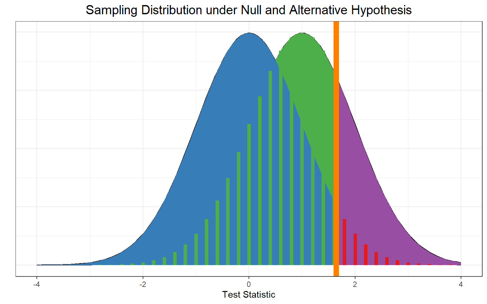
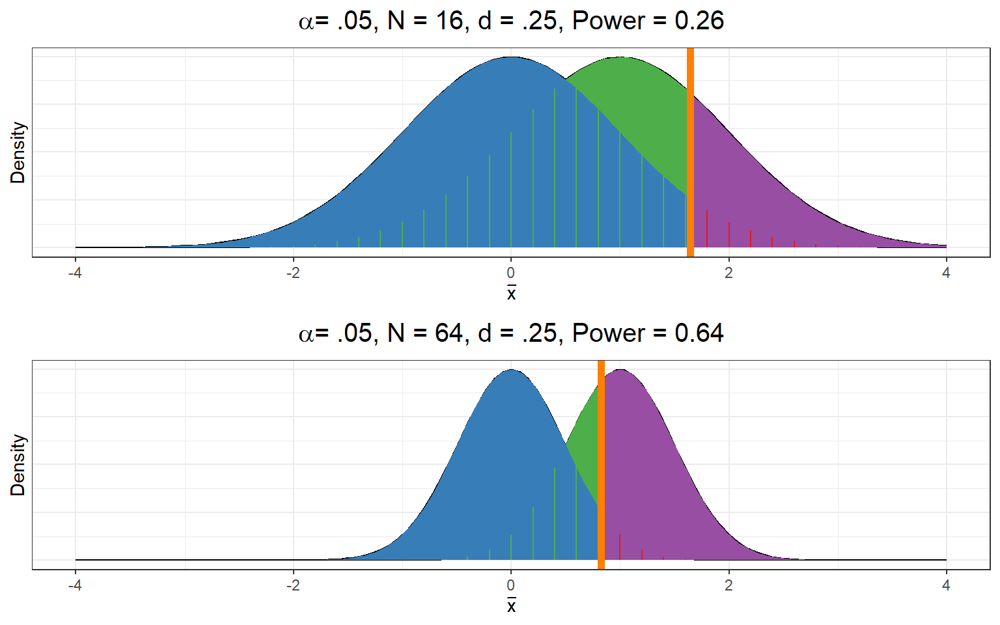
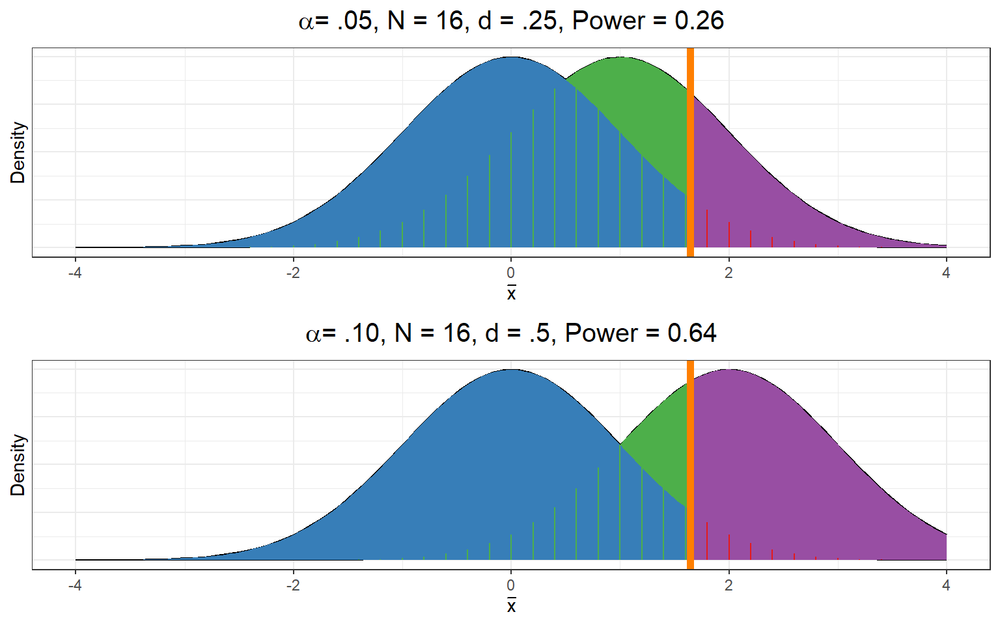
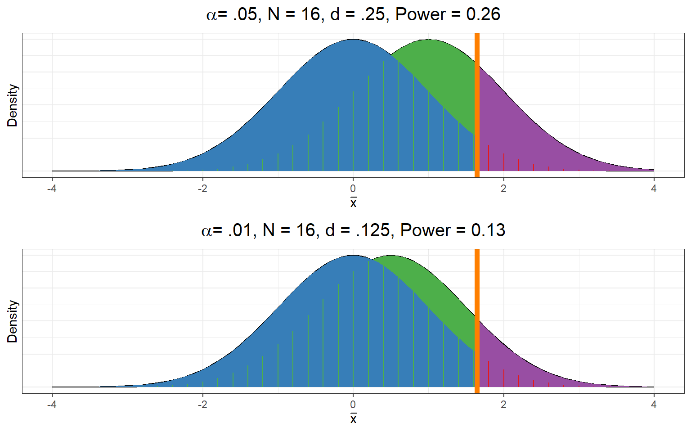
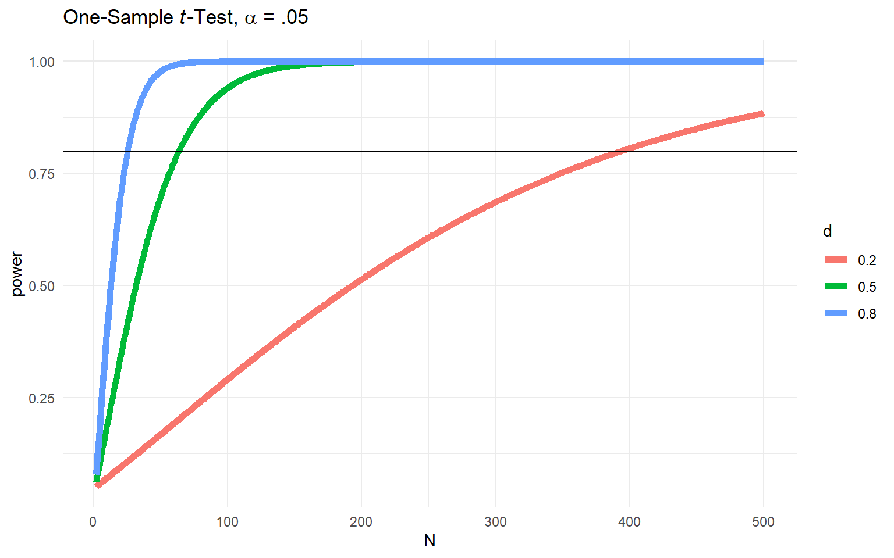

Lecture 10: Power and Power Analysis
Decisions, Decisions
When doing a null hypothesis test, what are the possible decisions we can make?
- Reject \(H_0\)
- Retain \(H_0\)
What are the possible true states of the world?
- \(H_0\) is true
- \(H_0\) is false (alternative hypothesis \(H_a\) is true)
Signal Detection
Power analysis is a signal detection framework. Signal detection theory arranges true states of the world and our ability to detect them into contingency tables:
| Positive Decision | Negative Decision | |
|---|---|---|
| Signal Present | True Positive | False Negative |
| Signal Absent | False Positive | True Negative |
Translated to NHST:
| Retain \(H_0\) | Reject \(H_0\) | |
|---|---|---|
| \(H_0\) True | Correct retention | Type I error |
| \(H_0\) False | Type II error | Correct rejection |
Review
Consider an upper tailed, one-sample \(z\)-test:
\[H_0: \mu \leq 0\]
\[H_a: \mu > 0\]
\(\mu\): Actual population mean
\(\mu_0\): Population mean proposed by null hypothesis (null mean)
What We Know
If \(\mu = \mu_0\), we already know the null sampling distribution of \((\bar{x})\)
If \(\mu_0 = 0\), then sampling distribution of \(\bar{x}\) is symmetric about 0
\(z_{\text{obs}} = \bar{x} / \sigma_{\bar{x}} \sim N(0, 1)\)
- Where \(z_{\text{obs}}\) is the test statistic
If we use our standard \(\alpha = .05\) then….
Probabilities Under the Null Hypothesis

God’s Eye View
Let’s now do a thought experiment. In this thought experiment, we are omnipotent, and can take a “God’s eye view” of the situation.
Thought Experiment
Let’s imagine a world where we know the true parameter \(\mu = 1\) and \(\sigma = 4\).
- Put another way, we know the true effect size is \(\delta = \frac{\mu - \mu_0}{\sigma} = \frac{1-0}{4} = 0.25\)
- Why did I use \(\delta\) instead of \(d\)? Because this is in the population (Greek letter) not sample (English letter)
It also means:
The sampling distribution of \(\bar{x}\) is symmetric about 1
If we collected repeated samples of size 16, what is \(\sigma_{\bar{x}}\)?
- \(\sigma_{\bar{x}} = \frac{4}{\sqrt{16}} = 1\) and \(\bar{x} \sim N(\mu_{\bar{x}} = 1, \sigma_{\bar{x}}=1)\)
We can plot the sampling distribution for the this hypothetical case as well, and see how often we would reject \(H_0: \mu = 0\) when we assume that \(\mu = 1\)
Under the Null

Under \(\mu = 1\)

Directly Comparing

Decisions and Errors
Possible Outcomes
| Retain \(H_0\) | Reject \(H_0\) | |
|---|---|---|
| \(H_0\) True | Correct retention | Type I error |
| \(H_0\) False | Type II error | Correct rejection |
Associated Probabilities/Proportions
| Retain \(H_0\) | Reject \(H_0\) | |
|---|---|---|
| \(H_0\) True | \(1-\alpha\) | \(\alpha\) |
| \(H_0\) False | \(\beta\) | \(1-\beta\) (Power) |
Power Definition
Keep in mind the frequentist idea of conducting multiple hypothetical experiments
Imagine many experiments for which \(H_0\) is true
Conduct the hypothesis test (against \(H_0\)) a large number of times
What proportion of these hypothesis tests are rejected?
- Should be \(\alpha\) if we set things up right
Power: the proportion of repeated experiments that correctly reject \(H_0\) when something else is true
“Something else” is \(H_a\)
\(\beta\) is probability of incorrectly retaining \(H_0\) when \(H_a\) is true
- Power: \(1 - \beta\) (probability of correct rejection)
This probability is also associated with with the procedure of repeated experiments, not a particular data set
Power Analysis
In power analysis, we make a second, different assumption about what \(\mu\) might be besides \(\mu_0\)
How likely it is you would correctly reject \(H_0: \mu = \mu_0\) in this alternative case?
Slightly different from the “traditional” way we teach alternative hypotheses as inequalities
We assume a different equality than the null
- E.g., we assumed \(\mu = 1\) in our thought experiment before
- Allows us to generate a specific alternative sampling distribution
- Examine rejection rate if this is the true distribution, but test is based on the null distribution
Alternative Under Null

Power Simulation Setup
One way to do power analysis is simulation! Most of the methods we will cover in this class don’t require simulation, but simulation can help understand what power analysis is doing, and there are some methods that require simulation for power analysis.
I will use the following to simulate power:
- \(N = 16\) (in repeated experiments)
- \(\mu_0 = 0\)
- \(\mu_1 = 1\)
- \(\sigma = 4\)
- \(\sigma_{\bar{x}} = \frac{\sigma}{\sqrt{N}} = \frac{4}{\sqrt{16}} = 1\)
Power Simulation
iter <- 5000
pvals <- numeric(iter) # empty numeric vector with 5000 slots
set.seed(123) # set a seed to reproduce this example
for(i in 1:iter){ # 5000 repeated experiments
x <- rnorm(n = N, mean = mu1, sd = sigma) # generate data from H1
zobs <- (mean(x) - mu0) / (sigma / sqrt(N)) # calculate test statistic
pvals[i] <- pnorm(zobs, lower.tail = FALSE) # calculate p-value
}What proportion of my \(p\)-values are \(< .05\) (correct rejections)
Meaning that if:
- The true mean is \(\mu = 1\)
- My test is based on \(H_0 = 0\) with \(\alpha = .05\)
- \(\sigma = 4\) and \(N = 16\)
I can expect to correctly reject \(H_0\) around 26% of the time.
Distribution of \(p\)-values

Power Analysis Inputs
Power analysis has four main inputs
- Sample size (\(N\))
- Effect size (_)
- Type I error rate (\(\alpha\))
- Type II error rate (\(\beta\))
- Alternatively, power (\(1 - \beta\))
Population Effect Size
When we discussed effect size last time, we were talking about estimating an effect size from a sample, which we called \(d\)
In power analysis, we assume an effect at the population level. What did I call an equivalent population effect size earlier? (Hint: not an English letter!)
- \(\delta\)
In the previous example, what was \(\delta\) ?
- For estimating \(d\) from a sample \(d = \frac{\bar{x} - \mu_0}{\sigma}\). In the population, we would have \(\delta = \frac{\mu - \mu_0}{\sigma} = \frac{1 - 0}{4} = .25\)
Increasing Power
In our previous example, our statistical power here was .26
- We only correctly reject the null hypothesis 26% of the time, not great!
How might we increase it?
- Increase \(N\)
- Increase effect size
- Decrease \(\alpha\)
We can tweak any of these in our simulation. But which would be in our control as an experimenter?
- If we have the resources, we can increase \(N\)
- If we are willing to accept a higher chance of a Type I error, we can decrease \(\alpha\)
- We can’t control the “true” effect size, that’s a fixed property of the world!
Increasing Sample Size Increases Power
Null sampling distribution:
\[\bar{x} \sim N\left(\mu_0, \frac{\sigma}{\sqrt{N}}\right)\] Alternative sampling distribution:
\[\bar{x} \sim N\left(\mu_1, \frac{\sigma}{\sqrt{N}}\right)\]
Increasing \(N\) will shrink the standard error, increasing the distance between the two distributions
Increasing \(N\)

Decreasing \(N\)

Increasing \(N\) Simulated
N <- 64 # instead of 16
mu0 <- 0 # null mean
mu1 <- 1 # true population mean
sigma <- 4 # so that sigma / sqrt(N) = 1
set.seed(123) # set a seed to reproduce this example
pvals <- numeric(5000) # empty numeric vector with 5000 slots
for(i in 1:5000){ # 5000 repeated experiments
x <- rnorm(n = N, mean = mu1, sd = sigma) # generate data from H1
zobs <- (mean(x) - mu0) / (sigma / sqrt(N)) # calculate test statistic
pvals[i] <- pnorm(zobs, lower.tail = FALSE) # calculate p-value
}
mean(pvals < .05)Increased \(N\) Visualized

Decreasing \(\alpha\) Decreases Power
The Type I error rate \(\alpha\) determines the cutoff between the retention and rejection regions. Increasing \(\alpha\) means you are more likely to reject \(H_0\) for both the null and alternative hypothesis
- In theory, you could start with \(\beta\) (or power) to determine your \(\alpha\), but we usually start with \(\alpha\)
Tradeoff between minimizing Type I error rate and maximizing power
Decreasing one decreases the other
Increasing one increases the other
Neither allowing more liberal (larger) or requiring stricter (smaller) \(\alpha\) will lead to more reliable results or more correct decisions. It will just adjust your tolerance for different types of errors
Decreasing \(\alpha\)


Increasing \(\alpha\)


Larger Effects
Null sampling distribution:
\[\bar{x} \sim N\left(\mu_0, \frac{\sigma}{\sqrt{N}}\right)\]
Alternative sampling distribution:
\[\bar{x} \sim N\left(\mu_1, \frac{\sigma}{\sqrt{N}}\right)\]
- Larger differences between \(\mu_1\) and \(\mu_0\) will create larger separation between the distributions
- Larger effects \(\rightarrow\) more power
Larger \(d\)


Smaller \(d\)


In Practice
This demonstration used a \(z\)-test for simplicity, but only one thing changes when generalizing to more practical tests.
What changes?
The form of the sampling distribution. Instead of normal, we might use
- A \(t\)-distribution
- A \(\chi^2\)-distribution
- An \(f\)-distribution (more soon)
Power Analysis
Power analysis has four components.
Statistical power (\(1 - \beta\))
Sample size (\(N\))
Significance level (\(\alpha\))
Effect size
The idea behind power analysis, is that if you know any three of these, in most cases you can determine what the third must be at minimum / maximum.
Power Curves can show us how power changes for different combinations of each
Power Curves for \(d\)

Types of Power Analysis
| Type of Power Analysis | Input | Output |
|---|---|---|
| a priori | \(\alpha\) Statistical Power Effect Size |
Sample Size |
| Retrospective | \(\alpha\) Sample Size Effect Size |
Statistical Power |
| Sensitivity | \(\alpha\) Statistical Power Sample Size |
Effect Size |
| Criterion | Statistical Power Effect Size Sample Size |
\(\alpha\) |
| Compromise | \(\beta/\alpha\) Ratio Sample Size Effect Size |
\(\alpha\), \(\beta\) |
a priori Power Analysis
- Intended be done before data collection
- Meant to assist in deciding what sample size is needed
- Requires you to make an assumption about anticipated effect size
- Pilot study?
- Prior knowledge?
- Cohen’s benchmarks?
- Smallest Effect Size of Interest (SESOI)?
- Held constant: \(\alpha\), power, effect size
- Used to determine: minimum \(N\)
Sensitivity Power Analysis
- Can be done either before or after data are collected
- Typically assumes a fixed sample size
- Analyze what effect sizes can be detected at different fixed power levels. E.g.
- E.g., What is the smallest effect size you could detect with…
- …80% power?
- …95% power?
- Held constant: \(\alpha\), \(N\), power
- Used to determine: minimum effect size
Retrospective Power Analysis
- Often (but does not have to be) done after data are collected
- Typically assumes a fixed sample size
- Analyze how much power you have to detect different fixed effect sizes
- E.g., What is your statistical power if the true population effect is…
- …\(d = .2\)?
- …\(d = .5\)?
- SESOI?
- Held constant: \(\alpha\), \(N\), effect size
- Used to determine: power
Observed Power Analysis
- A type of retrospective power analysis
- Always after data are collected
- Calculate observed effect size from sample
- Calculate power based on observed effect size and actual sample size
STOP

Noisy Samples
Power is about detecting a population effect.
An observed effect size will almost never be exactly a population effect.
- It will also have sampling error
Imagine what would happen if we do an analysis, but only report results when our observed effect size implies at least 80% power. We’re going risk
- Making way more Type I errors than our actual \(\alpha = .05\)
- Way overestimating our true effect size
Simulated Example
In this example, I’m simulating a case where the null hypothesis is true, which means we should only reject it 5% of the time.
iter <- 10000 ## number of iterations
N <- 50 ## sample size
mu <- 0 ## population mean
sigma <- 1 ## population SD
res <- logical(iter) ## Container for results
set.seed(1005)
for (i in 1:iter){
x <- rnorm(N, mu, sigma)
tt <- t.test(x, mu = 0) ## conduct t-test, H_0: mu = 0
res[i] <- tt$p.value < .05 ## Check whether we reject null at alpha = .05
}Let’s see how often we (correctly) reject the null
So far so good
File Drawer
Now let’s see what happens if I ONLY keep the times where my observed power based on each individual sample is at least 80%. All the other times, I “file drawer” my results, and no one ever sees them but me
iter <- 10000
res <- character(iter) # Empty container
set.seed(4501)
for (i in 1:iter){
x <- rnorm(N, mu, sigma)
d <- effectsize::cohens_d(x) ## observed cohen's d
## do power analysis with observed cohen's d:
pwr_res <- pwr.t.test(n = 50,
d = d$Cohens_d,
sig.level = .05,
power = NULL,
type = "one.sample")
## Save my result if it had enough power
if (pwr_res$power > .8){
tt <- t.test(x)
res[i] <- tt$p.value < .05
}
## Otherwise file it away for none to see!
else{
res[i] <- "file drawered"
}
}Results
How often did we reject, retain, or file drawer the null?
- I never correctly retained the null hypothesis
- I incorrectly rejected it 82 times
- And the remaining 9,918 times I decided I didn’t have enough power and stuck my result in the file drawer
A Real Effect
Now let’s try an example where there is a true effect, but it’s not very big, \(\delta = .1\)
- How often we correctly reject \(H_0: \mu - \mu_0 = 0\) (\(\delta = 0\)) will be our power
- We can also look at our distribution of \(d\) and how well that estimates the true \(\delta\)
Real Results
Let’s look at:
- How often did we reject?
- What was our power?
- What was the mean \(d\) across samples?
So far so good
Effect Inflation
Now let’s see what would happen if file drawer results where our observed effect indicated insufficient power again
iter <- 10000
ds <- numeric(iter) # Empty container
set.seed(4501)
for (i in 1:iter){
x <- rnorm(N, mu, sigma)
d <- effectsize::cohens_d(x) ## observed cohen's d
## do power analysis with observed cohen's d:
pwr_res <- pwr.t.test(n = 50,
d = d$Cohens_d,
sig.level = .05,
power = NULL,
type = "one.sample")
## Save my result if it had enough power
if (pwr_res$power > .8){
ds[i] <- d$Cohens_d
}
## Otherwise file it away for none to see! (just leave it missing)
else{
ds[i] <- NA
}
}Inflation Result
This time I just left the file drawered results as missing (NA)
Let’s look at our average \(d\) in the cases where we didn’t file drawer
Our average 4.5x as large as the true population \(\delta\)! We’re way overestimating it.
Making Retrospective Power Analysis OK
The best way to do a retrospective power analysis, and report a power level with any meaning, is to do it after you have collected data (or assuming you have a given \(N\)) but before you analyze your results.
- Example: if you know you have \(N = 50\) and want to see if you have enough power to detect a population effect size of at least \(\delta = .2\), you can do that, but DO NOT CHECK THE SAMPLE \(d\) FIRST
If you do use the observed effect size, you’d better not be basing any of your reporting or publication decisions on the results of your power analysis! Otherwise you’re going to wind up with either or both:
- Inflated Type I error rates
- Overestimates of the true effect size
Other Power Problems
Remember, power is all about our signal detection matrix:
| Retain \(H_0\) | Reject \(H_0\) | |
|---|---|---|
| \(H_0\) True | Correct retention | Type I error |
| \(H_0\) False | Type II error | Correct rejection |
- Making NHST decisions is a simple recipe that’s easy to teach people who don’t want to think more carefully
- I am not a teacher that teaches easy recipes, and you are not students who don’t want to think more carefully
- There is more to inference than making an NHST decision
Power Positives
The general idea of considering hypothetical alternative scenarios and analyzing how sensitive statistical methods are under varying assumptions is great
- Many statistical methods do similar things
- They don’t have to exclusively rely on power analysis
- Power is just one possible way to make a judgment about sample size sufficiency, but more \(N\) is always better
Alternative Perspectives
We have already seen another method that can help us make a judgment about the sufficiency of our sample size. What is it….?
- It is a method for judging the precision of a statistical estimate
- It tells us a range of values we cannot reject
Confidence intervals provide very similar information to any (retrospective) power analysis
Next Time
We will wrap up the first phase of the semester with a slight shift in perspective
- The vast majority of statistical methods can be restructured to be special cases of a more general form
- The General(ized) linear model
- This approach will also help set the stage for giving you a little taste of Bayesian approaches to statistical estimation and inference
Last Chance for Review!
Next Tuesday will be our review session
- If you want to see any material reviewed, post on Ed Discussion ASAP
- All material covered through this Thursday is fair game for exam
- Exam will be next Thursday at regular class time